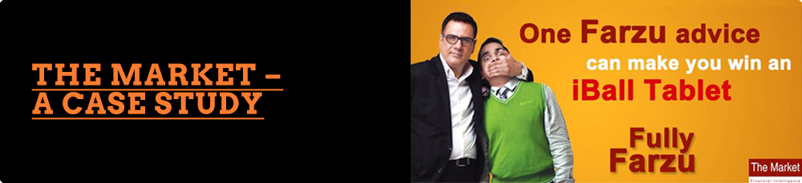
Environment
"The Market" is a first of its kind platform offering free solutions to investors across asset classes. Be it Equity, F&O, Commodities, Currencies, Insurance, Mutual Funds, Wealth Management or any other asset. "The Market" aims to provide best possible solutions to its customers so that they are benefitted to the max and that too at absolutely NO COST. “The Market” has now added a digital foothold via Facebook and Twitter, to its cap. The need was for a Social Media Agency to Partner them in their endeavour to create and build on the buzz in the social space.
Agency Brief
To enable social media audiences to be aware of “The Market” as a unique platform to gain Financial Intelligence and be informed 24X7.
The Challenge
To project “The Market” as a firm that knows the difference between real and fake financial advice, utilizing its current ‘Farzu’ campaign and creating a social media strategy for it.
As their Digital Marketing Agency partners, we had to make sure that the audience engages with “The Market” and create a community of financially smart individuals.
The Approach
The idea was to approach the angle of being ‘Financially Intelligent’ differently. We decided to engage with our fans on the topic of ‘Farzu’ advice – Farzu meaning untrue or nonsensical. We had The Market’s new ad featuring Boman Irani to build on. In order to take the ‘Farzu’ concept forward, we took to Facebook and Twitter to get the buzz going and gave our fans the opportunity to have a bit of fun, all the while keeping “The Market’s” main underlying message in people’s minds – We all have friends or acquaintances who give us pointless advice. This is something that our fans across the Social Media environment, proved right by sharing all the advice they’ve received and helping spread our message.
Concept’s Online Marketing Agency arm developed a two-pronged approach for the Farzu digital campaign that was launched on Facebook – The first challenge was to define the word ‘Farzu’ itself. Did people actually know what it meant and in what context? How could we associate the word ‘Farzu’ with the everyday babblings of people who think they ‘know it all’ about finance?
Secondly, “The Market” was a new company in the, no pun intended, market. For any Digital Marketing Agency, the challenge in this is not about creating a Facebook presence but in creating a buzz by increasing the fan base as we went along with the campaign.
The Action
For fans of “The Market’s” Facebook Page, we launched a month-long contest where fans could recount all the strange financial advice they’ve received over the years. Checking the genuineness of the advice was not the criteria advice they received or not wasn’t a criteria, we wanted our fans to get as creative as possible. To get people buzzing about the contest, we released a couple of teasers prior to the contest launch:
Our fans were curious to know what the whole deal was. We kept the teasers going for two days and launched our contest, simultaneously starting our Facebook ad campaign to get more fans, and more participation:
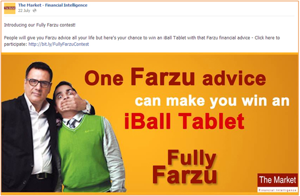
Users had to access our Facebook application where they were asked to register their details, and then participate by submitting their Farzu advice:
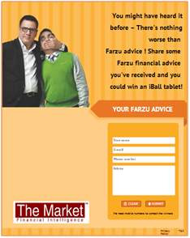
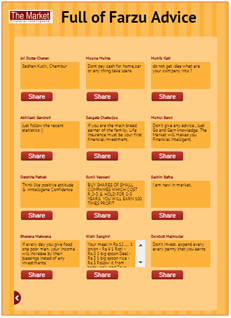
To ensure fans got the right idea of what they needed to do, our Social Media team along with “The Market” team, went about creating our own ‘Farzu’ advice as an example of what exactly we were looking for:
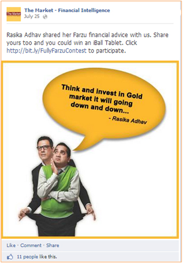
Soon, fans got the idea and the Farzu advice came flying in thick and fast. Our fans loved the fact that we were recognising their efforts by creating customised images of their entries, for all to see:
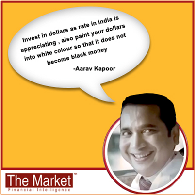
TWITTER:
The agency’s Online Marketing team managed to hit the ground running with the Facebook contest; some fantastic entries and creative participation. However, to increase our visibility on social media, we took to the one place where being fast and witty is the name of the game - Twitter.
The Action
We ran a Twitter hashtag contest called #FarzuAdvice, where users on Twitter had to tweet strange, false financial advice they’d heard for a chance at winning hourly Flipkart e-vouchers. Our Social Media Agency team began engaging with users on Twitter, informing them of our contest:
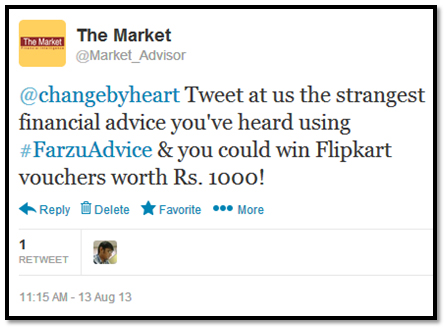
Soon, the entries came in thick and fast, we received tweets from Twitter users and influencers alike, helping push our hashtag around people’s timelines.
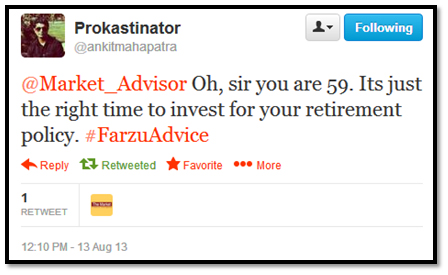
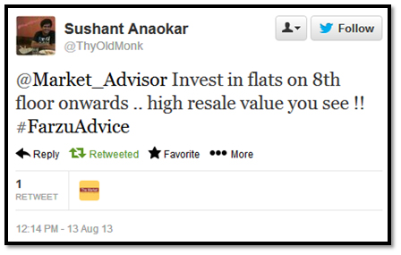
The tweets increased and the entries got more and more creative. With each tweet using the hashtag, Twitter was recognizing #FarzuAdvice as a topic that was quickly trending. Soon, #FarzuAdvice became one of the top trending topics in India:
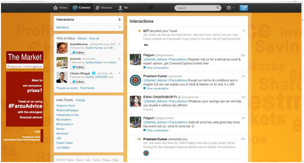
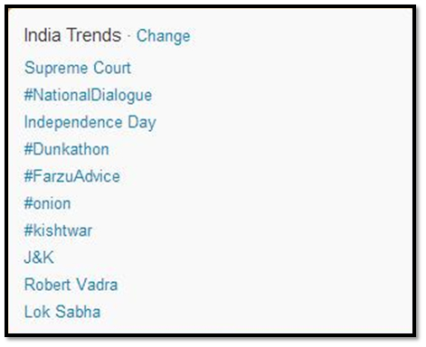
RESULT
Our campaign on Facebook saw “The Market” increase by 3348 fans in a month, with a total of 234 pieces of Farzu advice shared in the contest, “The Market’s” Facebook page reached a total of 1205001 Facebook timelines.
Through a single day Twitter campaign Concept’s Social Media Agency team managed to garner 65 new followers on Twitter, many of them being influencers. We received a whopping total of 516 witty tweets using the #FarzuAdvice, with the hashtag reaching approx 26,000 Twitter timelines.
Safe to say, “The Market” has set up a very visible camp on the social media front, achieving our campaign objective of spreading the word about Farzu Advice. We are happy to say that the agency’s Digital Marketing arm managed to make a good number of people empowered by financial intelligence.